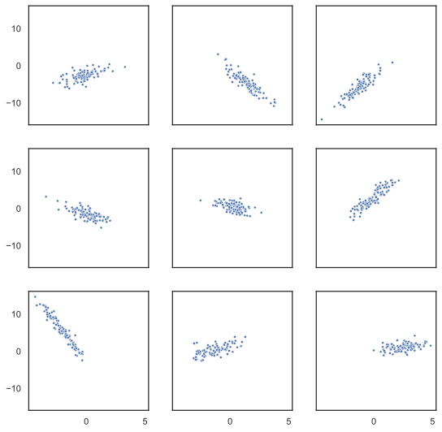
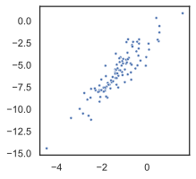
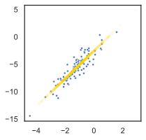

%config InlineBackend.figure_format = 'svg'Differentiable programming with GenJAX
Abstract
This notebook describes the gradient interfaces exposed by generative function implementors in GenJAX. It also describes TrainCombinator, a generative function combinator which exposes interfaces that make it easy to train learnable parameters with custom optimizers (from e.g. optax) using gradients with respect to the log joint density of the model. To illustrate the interfaces, we showcase a MAP optimization implementation, as well as a Metropolis Adjusted Langevin Algorithm (MALA) implementation. We also show how TrainCombinator can be used to perform maximum likelihood optimization, as well as variational family optimization.
import jax
import jax.numpy as jnp
import jax.tree_util as jtu
import numpy as np
import dataclasses
import matplotlib.pyplot as plt
import seaborn as sns
import genjax
from genjax import trace, slash, TFPUniform, Normal
sns.set_theme(style="white")
# Pretty printing.
console = genjax.pretty(width=80)
# Reproducibility.
key = jax.random.PRNGKey(314159)The generative function interface exposes functionality which allows usage of generative functions for differentiable programming. These interfaces are designed to work seamlessly with jax.grad - allowing (even higher-order) gradient computations which are useful for inference algorithms which require gradients and gradient estimators. In this notebook, we’ll describe some of these interfaces - as well as their (current, but not forever) limitations. We’ll walk through an implementation of MAP estimation, as well as the Metropolis-adjusted Langevin algorithm (MALA) using these interfaces.
Gradient interfaces
Because JAX features best-in-class support for higher-order AD, GenJAX exposes interfaces that compose natively with JAX’s interfaces for gradients. The primary interface method which provides jax.grad-compatible functions from generative functions is an interface called unzip.
unzip allows a user to provide a key, and a fixed choice map - and it returns a new key and two closures:
- The first closure is a “score” closure which accepts a choice map as the first argument, and arguments which match the non-
PRNGKeysignature types of the generative function. The score closure returns the exact joint score of the generative function. It computes the exact joint score using an interface calledassess.1 - The second closure is a “retval” closure which accepts a choice map as the first argument, and arguments which match the non-
PRNGKeysignature types of the generative function. The retval closure executes the generative function constrained using the union of the fixed choice map, and the user provided choice map, and returns the return value of the execution. Here, the return value is also provided by invoking theassessinterface.
1 Caveat: assess is not required to return the exact joint score, only an estimate. However, if jax.grad is used on estimates - the resulting thing is not a correct gradient estimator. See the important callout below!
So really, unzip is syntactic sugar over another interface called assess.
assess for exact density evaluation
assess is a generative function interface method which computes log joint density estimates from generative functions. assess requires that a user provide a choice map which completely fills all choices encountered during execution. Otherwise, it errors.2
2 And these errors are thrown at JAX trace time, so you’ll get an exception before runtime.
If a generative function also draws from untraced randomness - assess computes an estimate whose expectation over the distribution of untraced randomness gives the correct log joint density.
Correctness of gradient estimators
When used on generative functions which include untraced randomness, naively applying jax.grad to the closures returned by interfaces described in this notebook do not compute gradient estimators which are unbiased with respect to the true gradients.
Short: don’t use these with untraced randomness. We’re working on alternatives.
A running example
Let’s consider the following model, which we’ll cover in different variations.
# If you don't specify broadcast `in_axes`, you
# should specify number of IID samples via `repeats`.
@genjax.gen(genjax.Map, repeats=100)
def sample_x(x_mu, var):
position = trace("pos", Normal)(x_mu, 1.0)
return position
@genjax.gen(genjax.Map, in_axes=(0, None, None))
def sample_y(x, a, b):
position = trace("pos", Normal)(a * x + b, 1.0)
return position
@genjax.gen
def model():
x_mu = trace("x_mu", TFPUniform)(-3.0, 3.0)
a = trace("a", TFPUniform)(-4.0, 4.0)
b = trace("b", TFPUniform)(-3.0, 3.0)
x = trace("x", sample_x)(x_mu, 1.0)
y = trace("y", sample_y)(x, a, b)
return yAnd, most importantly, visualizations.
def viz(ax, x, y, **kwargs):
sns.scatterplot(x=x, y=y, ax=ax, **kwargs)
f, axes = plt.subplots(3, 3, figsize=(9, 9), sharex=True, sharey=True, dpi=280)
jitted = jax.jit(model.simulate)
trs = []
for ax in axes.flatten():
key, tr = jitted(key, ())
x = tr["x", "pos"]
y = tr["y", "pos"]
trs.append(tr)
viz(ax, x, y, marker=".")
plt.show()
A nice diffuse prior over points.
MAP estimation
When it comes to looking at the interfaces, a good first step is gradient-based maximum a posteriori probability (MAP) estimation. Let’s write this using the lowest level interface unzip first:
Now, often we may have a trace in hand, and we just want the first-order gradient with respect to certain random choices (specified by a genjax.Selection). This is a relatively common occurrence - so there’s a higher-level API choice_grad which gives us exactly this thing.3 Here’s MapUpdate using choice_grad.
3 It’s not compositional with jax.grad - but if we need that power, we can just drop back down to use unzip.
@dataclasses.dataclass
class MapUpdate(genjax.Pytree):
selection: genjax.Selection
tau: genjax.typing.FloatArray
def flatten(self):
return (self.tau,), (self.selection,)
def apply(self, key, trace):
args = trace.get_args()
gen_fn = trace.get_gen_fn()
key, forward_gradient_trie = gen_fn.choice_grad(key, trace, self.selection)
forward_values = self.selection.filter(trace)
forward_values = forward_values.strip()
forward_values = jtu.tree_map(
lambda v1, v2: v1 + self.tau * v2,
forward_values,
forward_gradient_trie,
)
argdiffs = tuple(map(genjax.Diff.no_change, args))
key, (_, _, new_trace, _) = gen_fn.update(key, trace, forward_values, argdiffs)
return key, (new_trace, True)
def __call__(self, key, trace):
return self.apply(key, trace)
map_update = MapUpdateSimple, concise - works with any generative function whose choices specified by MapUpdate.selection support gradients on the joint logpdf.
From the Pytree interface, any instance of MapUpdate has a static selection, and a tau (which determines the gradient step size) which can be dynamic.4
4 If this is your first time seeing the Pytree interface, note that it’s defined by the flatten interface - which allows us to specify runtime vs. trace time data in Pytree structures.
Because MapUpdate is a Pytree, in inference code, we’d just construct MapUpdate before calling it - and we can do this on either side of the JAX API boundary.5
5 E.g. outside of a jax.jit transform, inside - it’s all okay.
update = map_update(genjax.select(["x_mu", "a", "b"]), 1e-4)
updateMapUpdate ├── selection │ └── BuiltinSelection │ └── trie │ └── Trie │ ├── :x_mu │ │ └── AllSelection │ ├── :a │ │ └── AllSelection │ └── :b │ └── AllSelection └── tau └── (const) 0.0001
Let’s take a sampled piece of data, extract the ("x", "pos") and ("y", "pos") addresses, and then use MAP optimization to estimate the mode of the posterior.
tr = trs[2]
selection = genjax.select(["x", "y"])
chm = selection.filter(tr.strip())
chmBuiltinChoiceMap └── trie └── Trie ├── :x │ └── VectorChoiceMap │ ├── indices │ │ └── i32[100] │ └── inner │ └── BuiltinChoiceMap │ └── trie │ └── Trie │ └── :pos │ └── ValueChoiceMap │ └── value │ └── f32[100] └── :y └── VectorChoiceMap ├── indices │ └── i32[100] └── inner └── BuiltinChoiceMap └── trie └── Trie └── :pos └── ValueChoiceMap └── value └── f32[100]
x = chm["x", "pos"]
y = chm["y", "pos"]
fig_data, ax_data = plt.subplots(figsize=(3, 3), dpi=140)
viz(ax_data, x, y, marker=".")
If we apply MapUpdate, we take a single optimization step:
key, (_, tr) = jax.jit(model.importance)(key, chm, ())
key, (tr, _) = update(key, tr)We can use scan to apply MapUpdate repeatedly.
def chain(key, tr):
def _inner(carry, _):
key, tr = carry
key, (tr, _) = update(key, tr)
return (key, tr), ()
(key, tr), _ = jax.lax.scan(_inner, (key, tr), None, length=2000)
return key, trjitted = jax.jit(chain)
key, tr = jitted(key, tr)Now, we can plot the polynomial described by "a" and "b", with evaluation points generated around the estimated "x_mu".
def polynomial_at_x(x, coefficients):
basis_values = jnp.array([1.0, x])
polynomial_value = jnp.sum(coefficients * basis_values)
return polynomial_value
jitted = jax.jit(jax.vmap(polynomial_at_x, in_axes=(0, None)))
def plot_polynomial_values(ax, x, coefficients, **kwargs):
v = jitted(x, coefficients)
ax.scatter(x, v, **kwargs)
a = tr["a"]
b = tr["b"]
x_mu = tr["x_mu"]
key, sub_key = jax.random.split(key)
evaluation_points = x_mu + jax.random.normal(sub_key, shape=(1000,))
coefficients = jnp.array([b, a])
plot_polynomial_values(
ax_data,
evaluation_points,
coefficients,
marker=".",
color="gold",
alpha=0.05,
)
fig_data